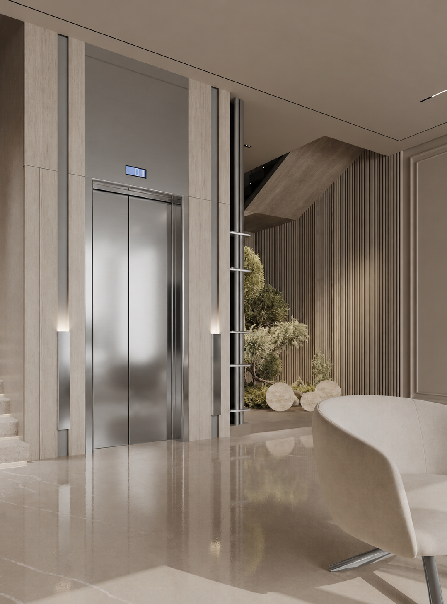
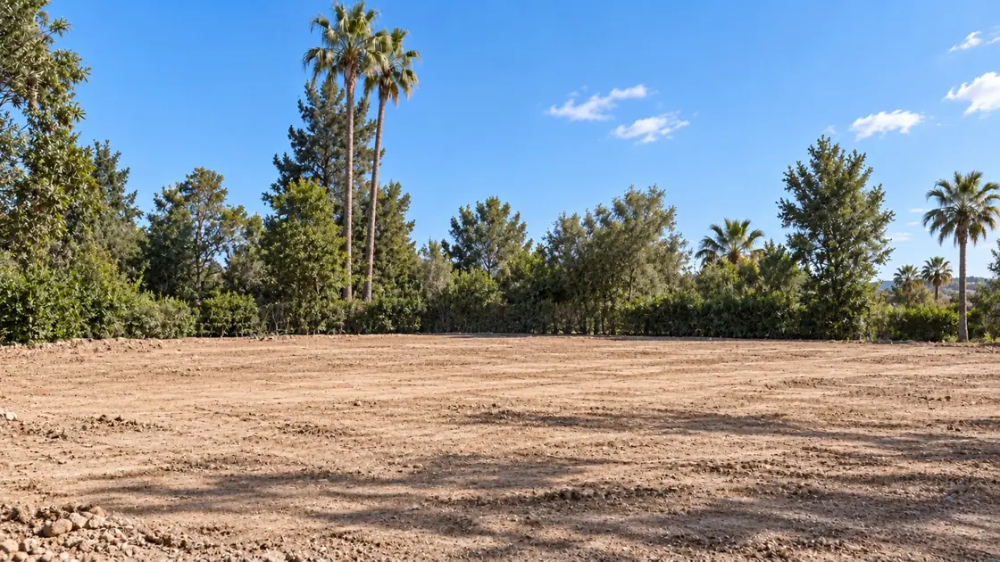

مساحات رحبة.
والضوء يرسم ملامحها.
٥ حمامات خاصة · حمام لكل جناح.
غرفة خدمة واحدة بحمام مستقل، مشمولة في الفيلا. تقع في الطابق الأرضي بالقرب من المطبخ، وهي مستقلة عن الأجنحة وعن غرفة الضيوف الاختيارية.
مصعد خاص مقترح.
ابتداءً من ١٫٦ مليون يورو
سعر مبدئي استرشادي · وفق الفيلا المختارة وشروط العرض.غرفة ضيوف إضافية.
يمكن، إذا رغبت، تحويل إحدى غرفتي الجلوس في فيلا سيلين إلى غرفة ضيوف إضافية دون تكلفة إضافية. هذا هو التعديل الوحيد المتاح في التوزيع، مع الحفاظ على التصميم المعماري وبقية مخطط النموذج.
المخططات وتوزيع المساحات
شاملة التراسات · باستثناء المسبح

اضغط على المخطط لفتح ملف PDF والتكبير دون فقدان الوضوح.

اضغط على المخطط لفتح ملف PDF والتكبير دون فقدان الوضوح.
المجموع: ٦٣٧ م²، بما فيها ٢٢٫٨٥ م² لمظلة السيارات والتراس فوقها، دون توزيع هذه المساحة بين الطابقين.
الصور والتصورات المعروضة في هذا الموقع توضيحية وغير تعاقدية.
مصعد خاص.
صلة هادئة بين طوابق سيلين. تتناغم درجات الفضة المصقولة والحجر الفاتح والخطوط الرأسية مع مساحات المعيشة.

الصور والتصورات المعروضة في هذا الموقع توضيحية وغير تعاقدية.
خطوط تنفتح.
وحياة تمتد.
ترسم بروزات السقف خطوط ظل طويلة. يتحاور الحجر الرمادي والخشب والزجاج حول المسبح. تقدم سيلين تتابعاً من المناظر بين غرف الجلوس والتراسات والحديقة، ويحتل الضوء قلب مساحاتها.
ولادة سيلين.
من الأرض إلى الفيلا المكتملة. مرر بإصبعك لاستعراض المراحل أو شغّل العرض.

محاكاة توضيحية لمراحل البناء. هذه الصور لا تمثل موقع بناء حقيقياً. · الصور والتصورات المعروضة في هذا الموقع توضيحية وغير تعاقدية.
الصور والتصورات المعروضة في هذا الموقع توضيحية وغير تعاقدية.
مساحات للاستقبال.
وهدوء للإقامة.
يسمح ارتفاع غرفة الجلوس للضوء بالانتشار عبر الواجهات الزجاجية الواسعة. يمنح الحجر ذو العروق المكان حضوره، بينما تلطف المقاعد الفاتحة ولمسات الأخضر خطوطه. حول المدفأة، تمتد الأحاديث في أجواء تجمع الانفتاح والخصوصية.
الصور والتصورات المعروضة في هذا الموقع توضيحية وغير تعاقدية.
طاولة واحدة.
ولحظات نتشاركها.
تواصل غرفة الطعام الحوار بين الحجر والخشب والضوء. تجمع الطاولة الكبيرة أفراد العائلة، وتدعو المقاعد إلى التمهل. خلف الزجاج، ترافق النباتات الوجبات وتمنح اللحظات المشتركة عمقاً آخر.
الصور والتصورات المعروضة في هذا الموقع توضيحية وغير تعاقدية.
مساحة مستقلة.
ومتعة التحضير.
يتميز مطبخ سيلين الكبير والمغلق والمستقل بجزيرة واسعة في الوسط. يحدد الخشب الرمادي المطفي والحجر الفاتح طابعه، مع خزائن بكامل الارتفاع وأجهزة مدمجة. تصور يتيح الطهي والتحضير والاستمتاع بالوقت في غرفة مستقلة متكاملة.
تصور للتوزيع الداخلي. تخضع المواقع والأبعاد والمواد والتجهيزات للتأكيد في المخططات ومواصفات البيع.
الصور والتصورات المعروضة في هذا الموقع توضيحية وغير تعاقدية.
فنجان قهوة.
ومتعة اللقاء.
إلى جانب المطبخ الرئيسي المغلق، يرافق المطبخ الصغير اللحظات العفوية: تحضير القهوة أو وجبة خفيفة أو الحديث حول المنضدة. يقع بالقرب من الواجهة الزجاجية، ليكمل دفء مساحات المعيشة.
الصور والتصورات المعروضة في هذا الموقع توضيحية وغير تعاقدية.
غرفة الغسيل.
تستعيد غرفة غسيل سيلين الخشب الرمادي المطفي والحجر الرمادي البيج في مطبخها. ينظم هذا التصور الغسيل والتجفيف وطي الملابس حول سطح عمل واسع وحوض وخزائن مدمجة.
الصور والتصورات المعروضة في هذا الموقع توضيحية وغير تعاقدية.
الهدوء،
بكل بساطة.
يتسلل الضوء عبر الستائر الخفيفة ليستقر على الأقمشة. تمنح الألوان الهادئة والألواح الرأسية والأرضيات الخشبية أجواء دافئة. تدعوك غرفة سيلين إلى التمهل: قهوة أو صفحات من كتاب أو صباح هادئ.
الصور والتصورات المعروضة في هذا الموقع توضيحية وغير تعاقدية.
لكل شيء
مكانه.
تمتد غرفة الملابس من غرفة النوم، وتجمع خزائن زجاجية وخشباً داكناً وإضاءة هادئة. تظل الخطوط بسيطة، لتجد الملابس والمقتنيات اليومية مكانها في مساحة صممت للاستعداد براحة.
الصور والتصورات المعروضة في هذا الموقع توضيحية وغير تعاقدية.
وقت
لنفسك.
يتناغم الحجر الفاتح مع عمق الخشب. يجمع تصور الحمام الرئيسي حوضي غسيل وحوض استحمام بتصميم نحتي ودشاً زجاجياً. يواصل الضوء الهادئ والخطوط البسيطة أجواء غرفة النوم والملابس في سيلين.
تصور للأجواء. تخضع المواقع والأبعاد والمواد والتجهيزات للتأكيد في المخططات ومواصفات البيع.
الصور والتصورات المعروضة في هذا الموقع توضيحية وغير تعاقدية.
الأثاث والإكسسوارات معروضة لتوضيح الأجواء. الأثاث غير مشمول في سعر الفيلا؛ ويمكن تقديم خدمة التأثيث بتكلفة إضافية وفق عرض سعر.
أجمل اللحظات
تُعاش ببساطة.
فطور مشترك، وضوء يعبر غرفة الجلوس، واستراحة في الحديقة. تتجلى سيلين أيضاً في هذه اللحظات: نظرات وابتسامات ومتعة اللقاء. فيلا صممت لتحتضن يومياتك وذكرياتك.
الصور والتصورات المعروضة في هذا الموقع توضيحية وغير تعاقدية.
المادة ترافق الخط.
تظهر شخصية سيلين في تبايناتها: عمق الواجهات الداكنة، وعروق الحجر، وحضور الخشب تحت الأسقف. اكتشف الرؤية التي توجه اختيار مواد وتشطيبات ويليامز آند هاربر.
كتيّب المشروع الكامل.
تحميل مباشر دون تعبئة نموذج.